Grafana Guide: Reuse, Versions and Sharing
|
This content was generated with the assistance of AI and should be verified against the official documentation before being relied on in production. |
Checked on 2026-11-11 against Grafana 13.3.x.
What you build
You make a reusable library panel called guide-request-rate from the request rate panel of the dashboard Bookshelf (guides), use it a second time on the same dashboard and unlink the copy again. You then read the JSON model of the dashboard, look at its saved versions and restore one, export the dashboard as code, see where an import starts, copy a link to it, look at the warning of an external share, and publish a snapshot.
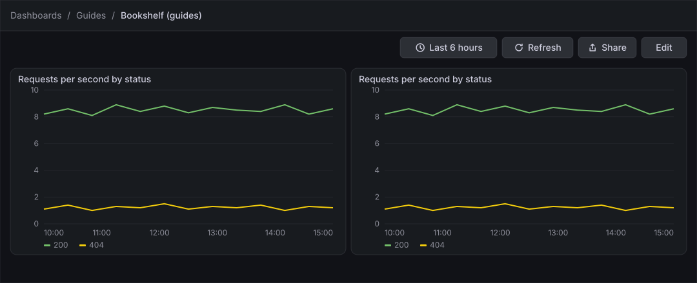
Before you start
-
Start the Grafana profile of the hands-on lab and wait about a minute:
cd lab docker compose --profile grafana up -d -
Open http://localhost:3000, sign in as
adminwith the passwordadmin, and click Skip when Grafana 13.3 asks you to update the default password. -
Do the previous guide, Rows, tabs, layouts, annotations and links, or at least Create a dashboard and the first panel, which creates the dashboard Bookshelf (guides) and its panel Requests per second by status.
-
The data source Prometheus is provisioned by the lab and is the default data source, so there is nothing to add.
-
The guide was checked on Grafana Enterprise 13.3.0 (the free image, no licence key). Editing dashboards and creating library panels needs the Editor or Admin role of the organization;
adminhas it. -
Creating, reusing and unlinking a library panel, the list of versions with its compare and restore controls, and the import page were not opened when the guide was checked. The steps name them without describing their exact layout, and the figures draw them in a simplified way. Follow the labels of your screen.
-
The figures are drawings of the Grafana 13.3 user interface, not screenshots, so small details can differ from your screen. A highlighted box with a number marks the control of the step with the same number.
Steps
Make a library panel
A library panel is stored once and can be used on many dashboards; a change to it shows up everywhere it is used.
-
In the left navigation, click Dashboards → Guides → Bookshelf (guides).
-
Click Edit at the right of the toolbar.
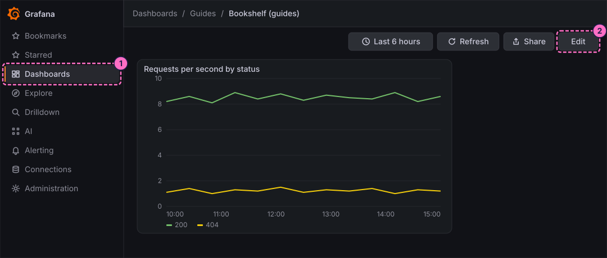
-
Open the menu of the panel Requests per second by status (the three dots of its header, Menu for panel Requests per second by status) and choose the entry that turns the panel into a library panel.
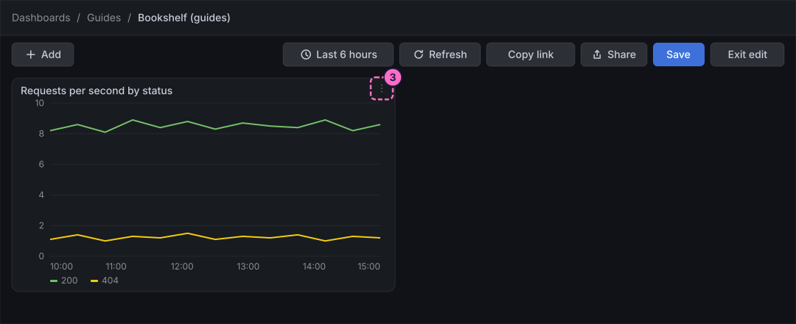
-
In the dialog that opens, name the library panel
guide-request-rate, choose the folder Guides and confirm the dialog.
Reuse the library panel and unlink the copy
-
Click Add at the left of the toolbar to open the Add pane.
-
Click the Panel tile ("Drag or click to add a panel"). Grafana adds an empty panel called New panel.
-
In the new panel, click Use library panel.
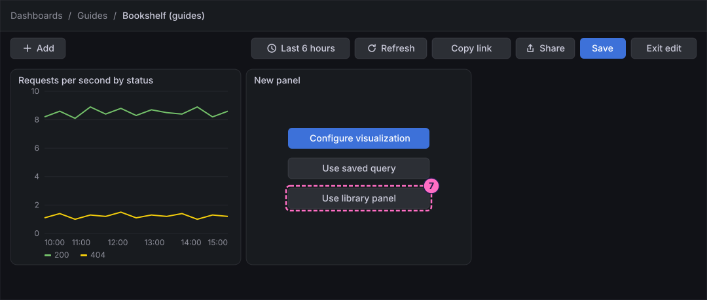
-
In the list that opens, choose guide-request-rate. The panel now draws the same chart as the first one.
-
In a second browser tab, open Dashboards → Library panels (the address is
http://localhost:3000/library-panels). The list holds guide-request-rate in the folder Guides, and shows where it is used.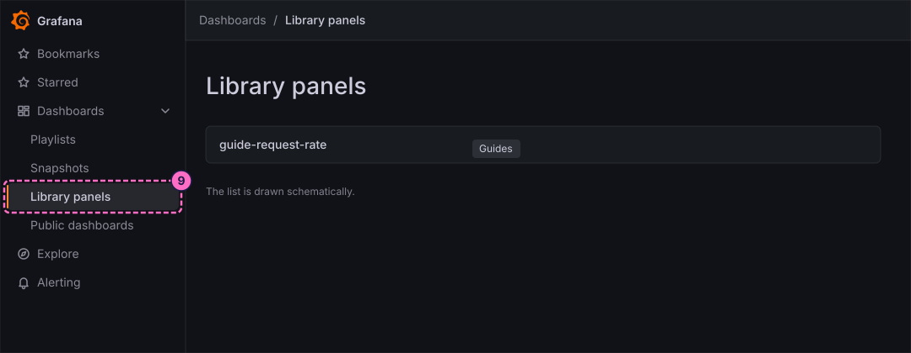
-
Back in the first tab, open the menu of the second panel and choose the entry that unlinks the library panel. The panel becomes an ordinary panel with its own copy of the settings, and changes to the library panel no longer reach it.
-
Click Save in the toolbar. The Save dashboard drawer opens.
-
In Message, type
Library panel reused. -
Click Save in the drawer. Each save creates a version of the dashboard, which the next phases use.
Open the dashboard settings
-
In the icon strip of the right sidebar, click Options. The Dashboard pane opens.
-
Click View all settings at the top of the pane.
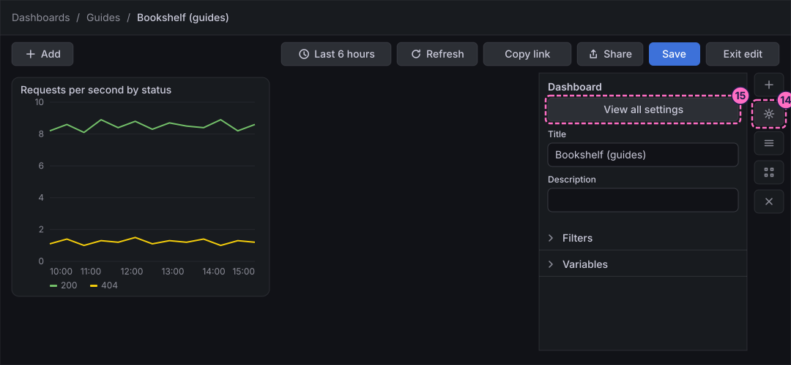
Read the JSON model
-
Click the JSON Model tab. The editor shows the whole dashboard as JSON. Dashboards made in Grafana 13.3 use the v2 resource schema: the first lines read
"apiVersion": "dashboard.grafana.app/v2"and"kind": "Dashboard", followed bymetadataandspec. Do not edit the text here; only read it.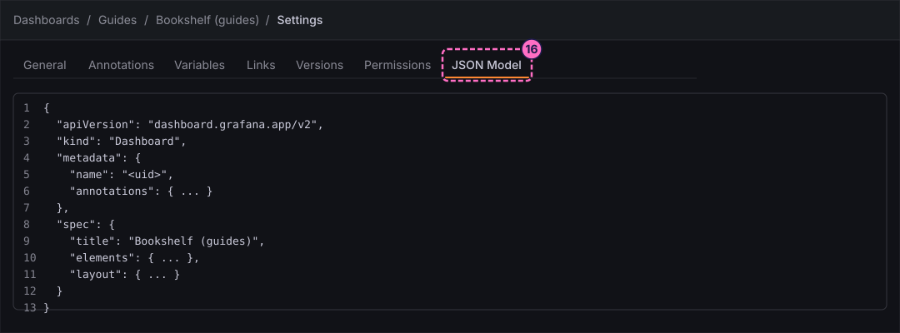
Compare and restore a version
-
Click the Versions tab. It lists the saved versions of the dashboard; the newest one carries your message
Library panel reused.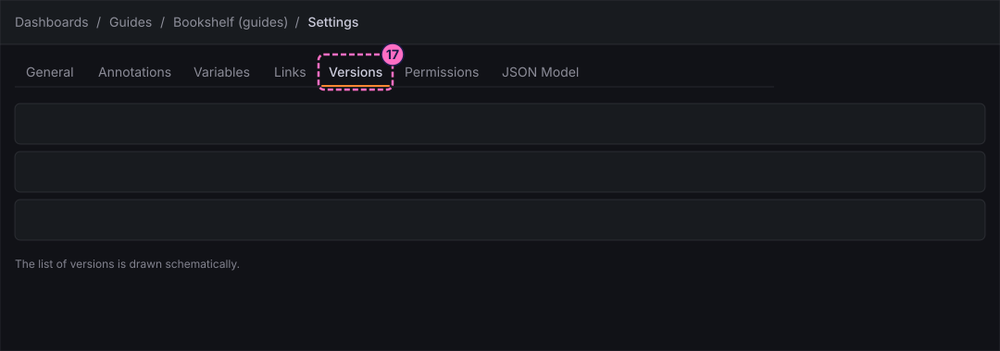
-
Select two versions in the list and use the control that compares them. Grafana shows what changed between the two.
-
Choose an older version and use the control that restores it, then confirm. Restoring does not delete the newer versions; it saves the old content as the newest version, so you can restore the newer one again the same way.
Export and import the dashboard
-
Click the breadcrumb Bookshelf (guides) to leave the settings.
-
Click Exit edit. If Grafana 13.3.0 shows the dialog Unsaved changes, click Save and, in the drawer that opens, Save again.
-
In the right sidebar of the dashboard, click Export → Export as code. The drawer Export dashboard ("Copy or download a file containing the definition of your dashboard") shows the same JSON as the model. The toggle Share dashboard with another instance prepares the file for another Grafana; leave it off here, and use the controls of the drawer to copy or download the file.
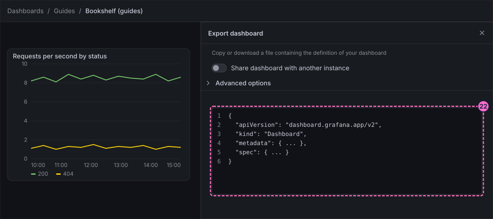
-
Close the drawer, then click Dashboards in the left navigation, New at the top right and Import dashboard.
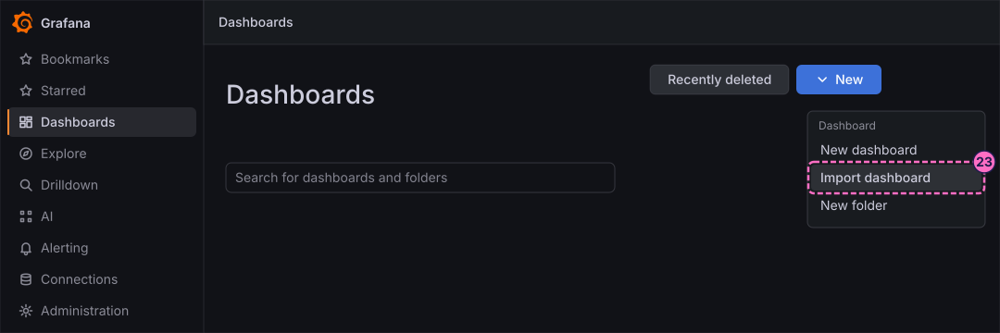
-
The import page takes a file or the pasted JSON. You can stop here and go back to Bookshelf (guides). To import the file you exported as a copy, give the copy another title, such as
Bookshelf (guides) copy, and a different UID when the page asks, because the original has the same ones; then choose the folder Guides and import it.
Share the dashboard
-
Back in the dashboard in view mode, click Share at the right of the toolbar.
-
Click Share internally.
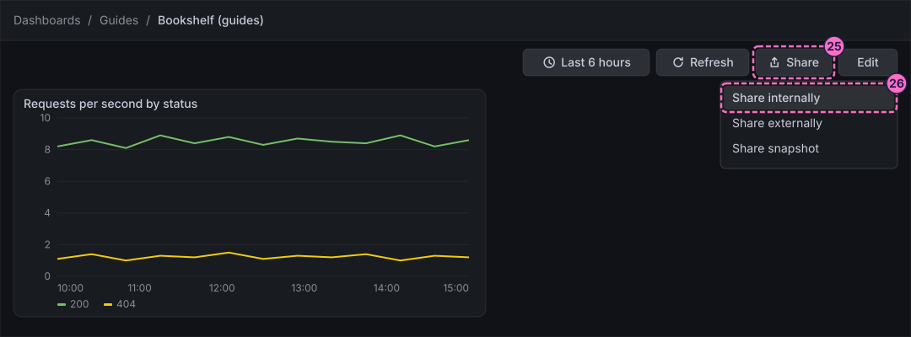
-
In the drawer under Link settings, switch on Lock time range. The link then opens with the time range you have now instead of the current one.
-
Click Copy link. Paste it into another browser tab to check that it opens the dashboard.
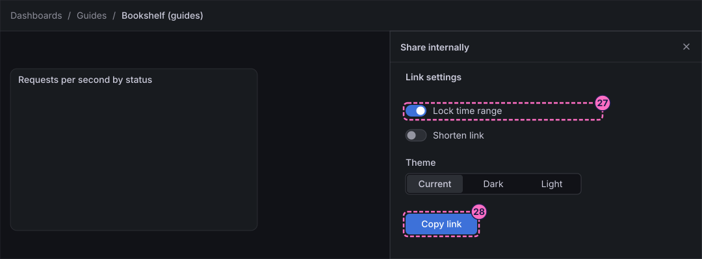
-
Close the drawer and click Share → Share externally. Read the checkbox I understand that this entire dashboard will be public. It is the price of a public dashboard: anyone with the link can see all of it, without signing in.
-
Do not tick the checkbox. Click Cancel.
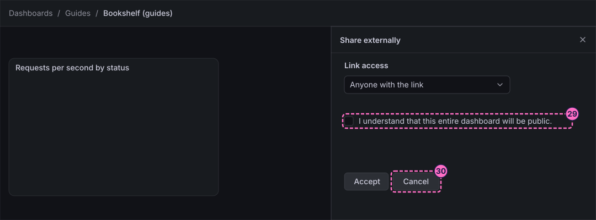
Take a snapshot
A snapshot is a frozen copy of the data the panels show now. It does not need the data source afterwards.
-
Click Share → Share snapshot.
-
In Snapshot name, type
Bookshelf guides snapshot. -
In Expires in, choose
1 Hour. -
Click Publish snapshot. Do not use Publish to snapshots.raintank.io, which sends the data to an external service.
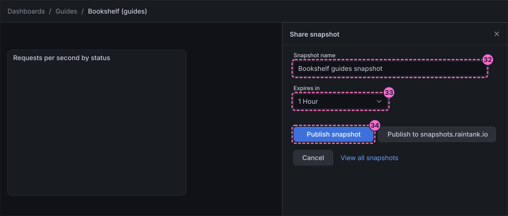
-
Open the link of the published snapshot, or Dashboards → Snapshots, to see it. Its panels keep the values of the moment you published it, whatever the load generator does later.
Check the result
The dashboard must show two panels with the request rate; the library panel guide-request-rate must be listed at Dashboards → Library panels; the Versions tab must list the versions you saved; the copied link must open the dashboard; and Dashboards → Snapshots must list Bookshelf guides snapshot.
To see that the snapshot is frozen while the dashboard is live, force errors, wait a minute and press Refresh on the dashboard, then compare it with the snapshot. Restore normal traffic afterwards:
curl -X POST localhost:8090/mode/failing
curl -X POST localhost:8090/mode/normalVariations
-
Reuse the library panel on a second dashboard (Use library panel in an empty panel) to see that a change of the library panel reaches both.
-
Export the dashboard as an image instead of code, with Export → Export as image, for a report.
-
Provision the exported JSON from a file, as the reference page on observability as code describes, to keep the dashboard under version control.
What can go wrong
| Symptom | Cause | Fix |
|---|---|---|
The panel menu has no entry for library panels |
The dashboard is not in edit mode, or the panel is already a library panel. |
Click Edit first. For a panel that is already a library panel, the menu offers the unlink entry instead. |
Use library panel lists nothing |
The library panel was not created, or you are in another organization. |
Open Dashboards → Library panels and check that guide-request-rate exists; repeat the first phase if it does not. |
The import reports that the dashboard already exists |
The file has the same UID or title as the dashboard in the folder. |
Change the title and the UID on the import page, or choose another folder. |
The external share cannot be confirmed |
You did not tick the checkbox that confirms the public share. |
That is the intended safeguard: click Cancel unless you really want a public dashboard. |
The snapshot shows no data |
The dashboard had no data in its time range when you published it. |
Wait for traffic, press Refresh, and publish the snapshot again. |
Clean up
Keep the dashboard and the library panel: the following guides use the dashboard. Delete the snapshot from Dashboards → Snapshots, and remove an imported copy by deleting that dashboard from its settings.
To remove everything else the lab stores, stop the profile with docker compose --profile grafana down -v, which also deletes the volumes.
Where to go next
-
Previous guide: Rows, tabs, layouts, annotations and links.
-
Next guide: Create an alert rule, which turns the Bookshelf request metrics into a rule that sends a notification.
-
Reference: Library Panels, JSON Model and Versions explains library panels, the JSON schema and the version history.
-
Reference: Sharing and Reporting covers links, public dashboards, snapshots and reports.